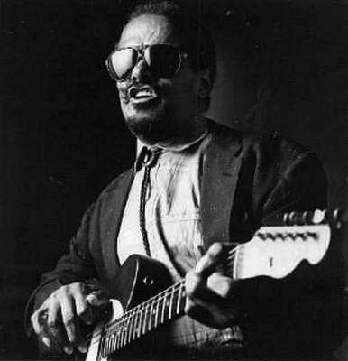
Друг юности Снукса Иглина - пианист Аллен Туссен (Allen Toussaint) - называл его "a human jukebox", то есть "живой музыкальный автомат". И в самом деле, Снукс мог играть все: от Бетховена до фламенко, от фанка до ритм-н-блюза - что пожелает публика. Одна из статей о музыканте начинается так: "Марк Твен однажды сказал: "Если вам не нравится погода в Нью-Орлеане, подождите... минутку". То же самое можно сказать и о репертуаре Снукса Иглина". Сам гитарист в одном из интервью признался, что в его репертуаре за все время было не меньше двух с половиной тысяч песен, а готовясь к концертам, он почти никогда не составлял сет-лист. Иглин исполнял номера, которые приходили ему в голову во время выступлений, а также выдавал ударные вещицы по заявкам из зала, так что часто ход концертов был непредсказуем даже для коллег по группе.
Слепой Иглин стал музыкантом, еще когда был подростком, ничем другим, кроме музыки, никогда не занимался. Пел в клубах, на улицах, фестивалях, на лодках во время туристических поездок, на ежегодном празднике "Марди Гра", на парадах. Это была его жизнь - жизнь незрячего гитариста в поисках благодарного слушателя и коммерческого успеха. Аудиторией в разное время были и единственный случайный прохожий, и несколько тысяч человек, приехавших на концерт нью-орлеанской знаменитости.
И все же для большой музыкальной карьеры у него слишком мало студийных альбомов, да и дискография - крайне запутанная, непоследовательная. Виртуозный гитарист, прекрасный вокалист и шоумен, Иглин, к сожалению, не стал звездой национальной величины, не говоря уже о завоевании мировой известности вроде Би Би Кинга или Стиви Рэй Воэна. Песни Снукса никогда не становились трансатлантическими хитами, ни один из его шикарных номеров не перепрыгнул локальную популярность. И все это - несмотря на "пулеметный" репертуар артиста.
Родился Иглин (урожденный Фёрд Иглин младший (Fird Eaglin, Jr. - иногда пишут "Ferd", иногда - "Ford") 21 января 1936 года в Новом Орлеане. После первого дня рождения у мальчика обнаружили глаукому, и, когда маленькому Иглину было 19 месяцев, провели операцию по ее удалению, а кроме того - операцию из-за опухоли головного мозга. Но сохранить зрение не удалось. Ребенок остался слепым на всю жизнь.
Домой он попал нескоро. Из-за осложнений мальчик провел в больнице в общей сложности несколько лет. На одни из именин, когда Иглину стукнуло шесть, родители подарили мальчику гитару. С тех пор отец, который сам играл на губной гармонике, нередко джемовал с сыном и подбирал песни, что неслись из радиоприемника и музыкальных автоматов и звучали с пластинок, которые были в домашней коллекции Иглинов. Вроде бы у отца нашего героя даже было звукозаписывающее оборудование, и он регулярно делал записи домашних концертов.
Шло время, и скоро за свой непослушный характер младший Иглин получил прозвище "Snooks" ("Snooks at smb." - с англ. "показывать кому-либо длинный нос, дразнить. Аналогично: "snooks!" - фига с маслом!, чёрта с два!). Примером послужил популярный персонаж на радио того времени - Бэйби Снукс (Baby Snooks). Задиристый характер Иглина не раз проявится в непристойных моментах текстов его песен и шутливых речитативах.
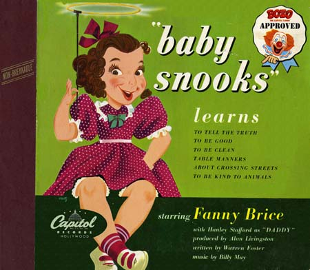
Через некоторое время маленький Снукс Иглин играл так сносно, что начал петь и подыгрывать хорам в баптистских церквях - ему еще не было и десяти. В 1947 году, в возрасте 11 лет, Иглин выиграл конкурс талантов, который организовала местная радиостанция WNOE - мальчик сыграл композицию "Twelfth Street Rag" и получил свои первые 200 долларов в качестве награды. Это подвигло его на еще более усердные занятия. Три года спустя, он решил стать профессиональным музыкантом и бросил школу для слепых в Батон-Руже.
В 1952-м Иглин присоединился к группе духовиков "Flamingoes", местному коллективу из 7 человек, организованному 13-летним пианистом Алленом Туссеном (Allen Toussaint) - тем самым автором афоризма про "живой музыкальный автомат". У "Flamingoes" не было басиста, и Иглин начал играть у них на гитаре, исполняя басовые партии. Наряду с такими новоарлеанскими командами, как "Art Neville’s band" и "The Hawketts", вскоре "Flamingoes" стали довольно популярной R&B-группой в городе. Они выступали на школьных танцах, вечеринках и в клубах.
Одна необыкновенная история относится как раз к тому времени. После одного концерта в городе Дональдсонвилль все члены группы сильно набрались. Ребята были слишком пьяны, чтобы сесть за баранку. Тогда слепой Иглин, по его словам, решил... сам вести машину группы в Новый Орлеан - это был "Студебеккер" 1949-го года. В интервью журналу "Offbeat" Снукс рассказывает: "Когда один из музыкантов в шутку спросил меня: "Эй, Снукс, не хочешь ли ты отвезти этих дураков домой?", я ответил: "Да, им лучше всем отрубиться побыстрее, а я уж, будьте спокойны, доставлю всех их в целости и сохранности".
Но, прежде чем пуститься в путь, всем им нужно было решить одну проблему. В радиаторе машины не было воды. Иглин, по его признанию, сказал тогда: "Я налью в тебя столько воды, сколько тебе нужно, крошка". Тогда все члены группы облегчились в радиатор машины и поехали домой (за рулем, как утверждает Иглин, был он сам). Шум гравия на обочине дороги подсказывал ему, что машина едет не туда и нужно направить ее снова к центру дороги. Группа каким-то чудом добралась домой рано утром в воскресенье. "Это настоящая, правдивая история", - настаивает Иглин.
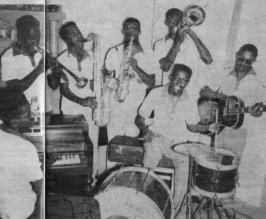
Работая с группой, Иглин не забывал о сольной карьере. Так, в 1953 году он участвовал в записи "The Cane Cutters" - группы Шугар Боя Кроуфорда (Sugar Boy Crawford). В частности, он сыграл на записи известной песни Кроуфорда "Jock-a-Mo."
Несколько лет коллективом "Flamingoes" занимался отец Снукса Иглина. И когда он внезапно умер, коллектив решил покинуть его лидер, Туссен. "Flamingos" распались... Иглину ничего не оставалось, как продолжить выступать в качестве "сайдмэна" на различных концертах - с этого момента он часто объявлял себя "Маленьким Рэем Чарльзом", на которого он действительно становился похож своей манерой пения. Ну, а если не было концертов или записи на студии, Иглин играл на улицах для туристов в квартале French Quarter (пригород Нового Орлеана). Тут-то его и нашел фольклорист из государственного университета Луизианы в Батон-Руже, 22-летний Гарри Остер (Harry Oster). Именно он сделает имя Иглина известным широкой публике.
Вторая половина 50-х - время американского фольклорного бума: он выведет на свет множество талантливых певцов и исполнителей США. Интерес молодых исследователей и музыкантов тех лет к сельскому блюзу сыграет на руку слепому Снуксу Иглину. Впечатленный талантом гитариста, Гари Остер сделает несколько аудиозаписей в промежутке между 1958 и 1960 годами. Позже в своих рецензиях он станет называть Снукса Иглина "эксцентричным, не вписывающимся ни в какие рамки виртуозом гитары". Вот фото Иглина, сделанные Остером в те годы - совсем как домашние дворики где-нибудь в Одессе.
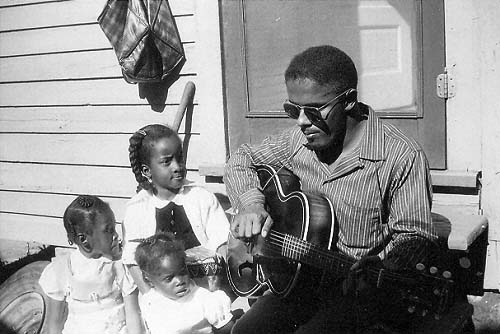
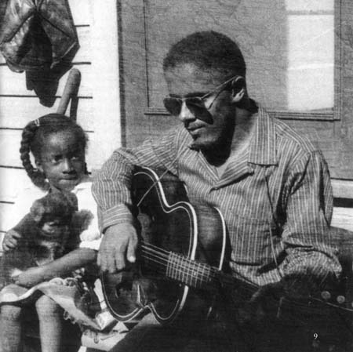
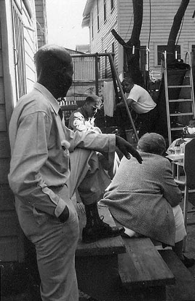
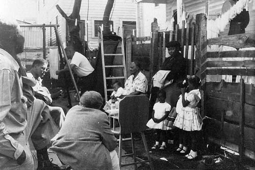
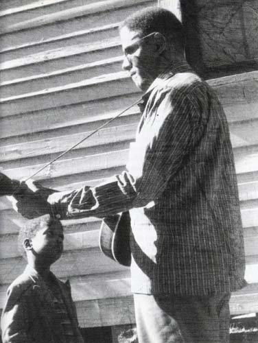
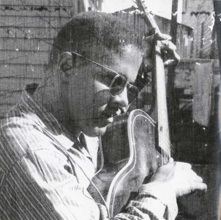
Звукозаписывающих сессий со Снуксом Иглином, сделанных при участии Остера, насчитывается семь - позже они станут треками на пластинках различных лейблов, включая "Folkways", "Folklyric" и "Prestige/Bluesville". Записи вроде бы получились в духе традиционного сельского блюза и госпела. Однако внимательный слушатель должен сразу заметить: играет Иглин, конечно, на акустике, но бОльшая часть песен все же из репертуара "электрических" групп - то, что называлось тогда "поп-музыкой", её Иглин впитал еще в юности из прослушивания радио и номеров музыкальных автоматов. Так что кроме традиционного сельского блюза, спиричуэлс и госпел среди источников вдохновения Снукса нужно отметить еще и хиллбилли, рок-н-ролл, ритм-н-блюз и даже джаз. Вообще, Снукс Иглин всегда мечтал играть ритм-н-блюз с "электрическим" бэндом, что ему блистательно удастся сделать гораздо позже, в более зрелые годы. Ну, а пока ему подыгрывают только исполнители на гармонике и... стиральной доске. Это Перси Рэндолф (Percy Randolph) - гармоника и стиральная доска - и Лусиус Бридджес (Lucius Bridges) - гитара и опять же стиральная доска.
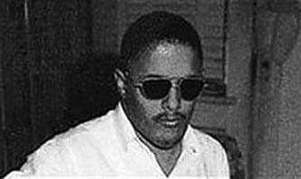
Впереди у Иглина будет несколько замечательных пластинок и сотни концертов, его фирменный стиль, замешанный на блюзе, фанке, свинге и фламенко (да-да!) станет мгновенно узнаваемым, но... все последующие десятилетия Снукс, к сожалению, станет записываться и выступать крайне неровно.
В 1959 году Снукс встретил свою будущую жену и постоянного компаньона - Дорти (Dorthea), или "Ди", как он сам ее называл. Рассказывают, что как-то раз она ждала на улице, когда начнется концерт Иглина, как вдруг сам главный герой представления вместе со своим барабанщиком подкатили к заведению на машине. Девушка спросила музыкантов, не могла бы она подождать выступления в их автомобиле, пока не открыли двери в зал? Друзья согласились, и на концерт Ди вошла уже вместе с Иглином под руку. Два года спустя молодые поженились и были с тех пор неразлучны. Тем временем, музыкальная карьера Иглина принимала другой оборот.
С 1960 по 1963 годы Иглин стал записываться на фирме "Империал" ("Imperial”) - уже как полноценный R&B-исполнитель. Это значит - с ансамблем, в котором иногда была даже духовая секция! Рассказ об этом чуть позже, а сначала об альбоме "That's All Right"(1961), записанным в акустике.
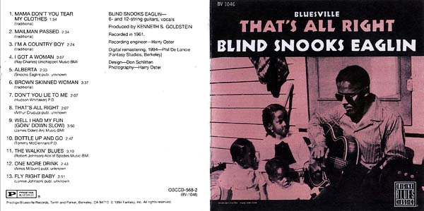
Пластинка сделана для лэйбла "Bluesville". Снукс исполняет 13 композиций и играет на 6- и 12-струнных гитарах, часто используя их в качестве... перкуссии. Здесь, как это характерно для всего творчества Иглина, традиционные номера дельта-блюза смешаны с поп-хитами того времени: тут тебе и переделанный Рэй Чарльз ("I Got A Woman"), и "перенесенный" на гитару рок-н-ролльный стиль игры пианиста Фэтса Домино (Fats Domino) в песне "Brown Skinned Woman". Словом, Снукс заварил джем из хитов горячей ротации на радио и джук-боксов того времени и смешал их с традиционным сельским блюзом. В его исполнении подобная смесь слушается, как ни странно, вполне органично. В связи с этим инициатор записей - фольклорист Гари Остер - рассуждает в рецензии на альбом об изменениях в национальной традиции кантри-блюза. Следуя его логике, народные песни на американском континенте раньше передавались из уст в уста, но теперь в дело все настойчивее вмешиваются индустрия звукозаписи и радио. Так что решить, кто на кого влияет - народная музыка на поп-культуру или наоборот - теперь не так уж и просто. Забавный факт - в качестве интершума на этих записях слышны... голоса поющих птиц.
Но вернемся к 60-м, времени работы Снукса Иглина на лэйбле "Империал", выходу около десятка его "сорокопяток" с жирным, заводным "черным" ритм-н-блюзом. Многие треки тех лет сделаны Иглином на студии под руководством ветерана-продюсера Дэйва Бартоломью (Dave Bartholomew). О нем стоит сказать отдельно.
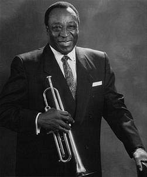
Дэйв родился в Луизиане, воевал на второй мировой, после войны обосновался в Новом Орлеане - здесь он создает свой джаз-бэнд. Работает в жанрах ритм-н-блюз, джаз, рок-н-ролл. Скоро талантливый трубач и поэт вырастает в известного аранжировщика и композитора - пишет песни для многих музыкантов Нового Орлеана. Наибольший успех приносит ему сотрудничество с Фэтсом Домино (Fats Domino). Бартоломью становится автором большинства хитов Домино, более 50-ти их общих композиций попадают в американский "Billboard Hot 100".
Именно такой человек становится продюсером "уличного" исполнителя Снукса Иглина. Он же - автор большей части записанных Иглином на "Империал" песен. Дэйв сочиняет композиции сам или в соавторстве со своими давними коллегами, и в период с 1960 по 1963 годы записывает с Иглином 7 сессий, результатом которых становится серия упомянутых "сорокопяток". Правда, не все из 26 записанных треков тогда вошли в синглы. Полное собрание - "The Complete Imperial Recordings" - вышло на CD только в 1995 году.
Снукс на обложках значится теперь как "Ford Eaglin". Акустику в его руках сменила электрогитара, а сам музыкант из певца-одиночки превратился в лидера R&B-группы, о чем давно мечтал. В ее составе были, например, такие люди, как принц новоарлеанского фортепиано Джеймс Букер (James Booker) и Смоки Джонсон (Smokey Johnson) на барабанах. Временами присоединялась духовая секция и бэк-вокалистки. На последней сессии в ритм-группе даже появилась вторая гитара!
Материал в итоге вышел отличный - Иглин вырос как гитарист и вокалист: послушайте, как он исполняет медленные, задушевные баллады или свингует в "Yours Truly" - будто всю жизнь только и делал, что солировал на электрогитаре! Ему по плечу хиты Фэтса Домино, Смайли Льюиса (Smiley Lewis), Ерла Кинга (Earl King), Лойда Прайса (Lloyd Price) и многих других звезд R&B 50-60-х годов.
Пластинки с мейнстримом хорошо продаются, номера имеют успех, репутация Снукса Иглина в Южной области Луизианы значительно укрепляется. Однако желанного национального успеха достигнуть так и не удается. Впереди маячит не очень светлое будущее: бум рок-н-ролла, британское вторжение, набирающая популярность рок-психоделия - все эти дерзкие "новички" на музыкальном небосклоне очень скоро отодвинут старый добрый американский R&B далеко в сторону.
В 1963 году лэйбл "Империал" закрывает свое отделение в Новом Орлеане. За спиной у Форда Снукса Иглина остаются двадцать с лишним R&B-хитов, которые имели успех, но... отдалили его от поклонников классического кантри-блюза. Впрочем, Иглин никогда особо и не придавал этому значения - эклектика становится его фирменным стилем. Многие из записанных на "Империале" вещей долгое время будут присутствовать в репертуаре гитариста.
Во второй половине 60-х Иглин практически не записывается. Исключением становится пластинка для Swedish Broadcasting Corporation - в 1964 году он проводит сессию у себя дома, один, с гитарой. Материал входит в альбом "Blueskvarter 1964: Vol.3".
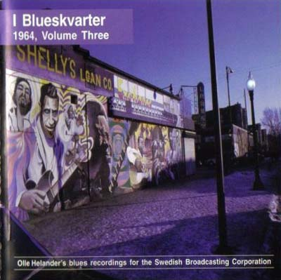
В эти годы в карьере Иглина наступает затишье - мир увлечен совсем другими музыкальными течениями: рок-н-роллом и роком с его многочисленными нарождающимися течениями. Иглин не выпускает ни синглов, ни альбомов, несколько лет подряд его композиции появляются лишь в сборниках - чаще фольклорного свойства. Зато выходят переиздания его альбомов в других странах - Японии, Франции, Англии.
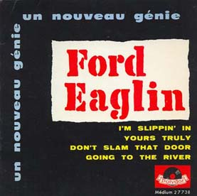
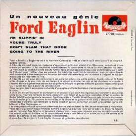
Музыкант продолжает время от времени работать в новоорлеанских клубах, особенно заметен трехлетний период в "Плэйбой Клубе" (Playboy Club). Вскоре он и его жена Ди, которая фактически стала его менеджером, переезжают в Доналдсонвилль (Donaldsonville) - городок между Новым Орлеаном и Батон-Ружем. А потом, в 1970-е, и в Сэнт-Роуз (St.Rose).
О Снуксе почти забывают, но интерес к новоарлеанской музыке просыпается в следующем десятилетии. В 1970 году открывается "New Orleans Jazz and Heritage Festival" - Новоарлеанский Джазовый Фестиваль. Публика вдруг вспоминает о Снуксе Иглине, но связано это, как ни странно, с именем пианиста по прозвищу "Профессор Лонгхэйр".
Об этом человеке стоит рассказать отдельно. Пианист и композитор Professor Longhair, или "Длинноволосый Профессор", или "Fess" (настоящее имя Генри Роуленд Берд), создал необычную технику исполнения рок-н-ролла на фортепиано - соединил ритмы буги-вуги с элементами румбы, мамбо и афро-кубинской техники игры. В итоге получилась выпуклая и довольно агрессивная манера исполнения. Своим учителем Генри Берда считали такие гранды, как Фэтс Домино, Хью Смит, Аллен Туссен, Доктор Джон и многие другие исполнители. Карьеру профессионального музыканта "Профессор" начал поздно и, записав несколько относительно заметных хитов и разочаровавшись в шоу-бизнесе, оставил музыку, чтобы прокормить семью. Вот тут-то он и встретился со Снуксом Иглином, которого тоже стали подзабывать. Было это так.
После долгих поисков фестивальный продюсер Квинт Дэвис (Quint Davis) смог обнаружить в лабиринтах Нового Орлеана потерянную легенду - Профессора Лонгхэйра. Дэвис предложил забытой знаменитости объединиться с коллегой по несчастью Снуксом Иглином и выступить на фестивале. Две легенды согласились. Их выступление ошеломило публику. Звезда "Профессора Лонгхэйра" снова взошла, и он получил статус "вновь открытого патриарха фортепьяно Нового Орлеана".
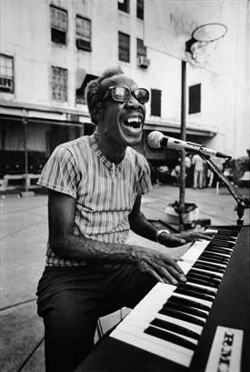
Выступив вместе на Новоорлеанском фестивале джаза, "Профессор Лонгхэйр" стал постоянным его участником. И даже выпустил в 1976 году свой концертный фестивальный альбом. Впоследствии "Профессор" и Снукс Иглин не раз играли вместе в период с 1970 по 1972 годы. По воспоминаниям современников, многие слушатели даже думали, что Снукс был простым сессионным гитаристом в группе "Волосатого Профессора".
Музыканты действительно были хорошими друзьями. Исполнитель на конгах Альфред "Уганда" Робертс (Аlfred "Uganda" Roberts) вспоминает: "У Иглина был перкуссионный стиль игры на гитаре - он часто выстукивал ритм пальцами на деке во время исполнения композиций. Все это напоминало перкуссионный стиль самого Лонгхэйра, его манеру игры на фортепиано. Гитара для Иглина была больше, чем гитара. И в джемах с Лонгхэйром они находили много общего".
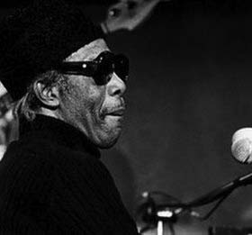
Параллельно Иглин записывает альбом на шведском лейбле "Sonet", релиз выходит в июне 1971 года и называется "The Legacy of the Blues, Part 2", пластинку продюсирует Квинт Дэвис.
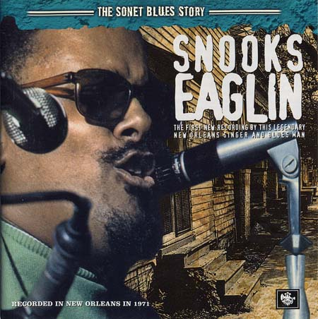
В том же году продюсеры Новоарлеанского Джазового Фестиваля Квинт Дэвис и Паркер Динкинс (Parker Dinkins) устроили запись в таком составе: "Профессор", Иглин, барабанщик "Шиба" Эдвин Кимброг (Shiba Edwin Kimbraugh) и Уилл Харви мл. (Will Harvey Jr.) на бас-гитаре. В итоге были записаны 34 трека. Демо-запись дошла до "ушей" компании "Atlantic Records", а именно - до Джерри Векслера и Альберта Гроссмэна (Jerry Wexler and Albert Grossman). Те перевезли музыкантов в студию "Bearsville", что в г.Вудсток (Woodstock), штат Нью-Йорк, и начали сессию. Однако дело до конца не довели - то один, то другой музыкант стал уезжать на периодически появляющиеся выступления, и скоро проект свернули.
Ленты тех сессий томились в студии "Bearsville" в течение многих лет, пока не были раскопаны и изданы в 1987 году на лэйбле "Rounder Records". Их назвали так: "Professor Longhair’s House Party New Orleans Style: The Lost Sessions 1971-72". Сказать, что здесь талант Снукса Иглина как-то ярко проявился, можно с большой натяжкой: в основном он играет ритмические фигуры, а солирует лишь иногда. Первая скрипка все же - Профессор Лонгхэйр. Исключением можно назвать, пожалуй, только трек #14 - "G Jam". Это инструментальная вещица в стиле блюз-фанк. Именно здесь мы слышим в полную силу жгучую гитару Иглина, которая подчеркивает синкопированную манеру фортепьяно "Профессора".
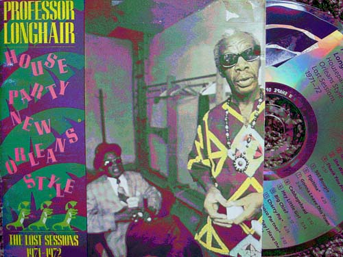
Остается осветить еще одну сторону работы Иглина в 70-х годах. Это сотрудничество с коллективом "Дикие Магнолии" ("The Wild Magnolias"). Новоарлеанская команда играла фанк, а Снукс сыграл на ее первом альбоме, записанном в 1973 году. Группой занимался уже знакомый нам продюсер Квинт Дэвис, он и вовлек Иглина в этот проект.
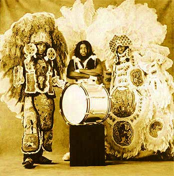
Группа родилась как атрибут традиционного ежегодного фестиваля-маскарада - "Марди Гра". Этот праздник часто упоминается в текстах Иглина. Если говорить коротко, то фестиваль "Марди Гра" - это наследие языческого прошлого, вроде нашей Масленицы, он ежегодно отмечается 16 февраля.
Праздник "Марди Гра"
Возник праздник в XVIII веке на управляемой Францией территории нынешнего штата Луизиана. Традиционно - это шумные экзотические парады и карнавалы, но "Марди Гра" - это еще и знаменитые на весь мир джазовые оркестры ("The Batiste Brothers", "Mahogany Brass Band", "The Wild Magnolias Mardi Gras Indians").
Праздник "Марди Гра"
Пик празднества приходится на Новый Орлеан. Сегодня "Марди Гра" - это еще и время пиршества сексуальных меньшинств.
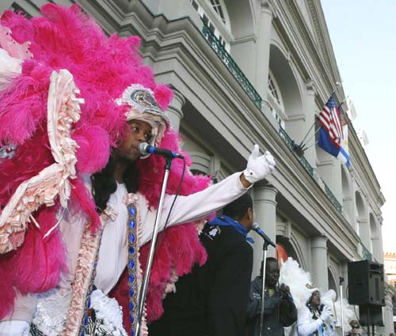
Но вернемся к группе, в которой недолго играл Снукс Иглин. Как это ни странно звучит, но своим антуражем ее участники избрали индейскую символику и костюмы, а стилем - фанк. Такая вот сочетаемость.
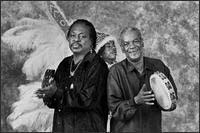
Первую "сорокопятку" парни выпустили в 1970 году для лэйбла "Crescent City Records", назвав ее "Handa Wanda". Традиционно группа состояла из вокалиста и целой серии ударных инструментов и перкуссии, часто немузыкального применения: кроме барабанов, тамтамов, конгов, использовались тарелки, пивные бутылки и банки... К такой вот команде время от времени присоединялись местные музыканты: группа духовых, басисты, пианист Вилли Ти (Willie Tee) и, что интересно нам, гитарист Снукс Иглин. Эта бэк-группа в начале 70-х называлась "New Orleans Project".
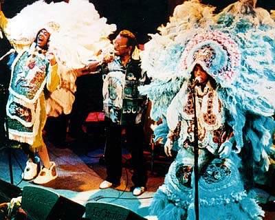
Скоро "The Wild Magnolias" подписали контракт с французским лейблом "Barclay Records" и через "Polydor Records" стали выпускать альбомы в Америке. История этого самобытного коллектива - тема отдельного разговора, здесь лишь стоит сказать, что первый полноценный альбом команды 1974 года, где и сыграл Снукс Иглин, представляет собой предельно танцевальный, "грувовый" продукт - сегодня он слушается абсолютно современно, хоть сейчас отдавай ди-джею модного клуба.
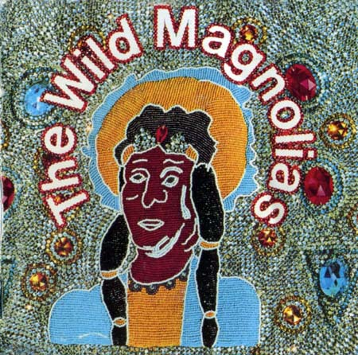
Иглин здесь играет с гитарным эффектом "вау-вау" (большая редкость!), у нас больше известным как "квакушка". Запись впервые представила широкой публике уникальную индейскую культуру Нового Орлеана. Пластинка была переиздана в 1993 году французским лэйблом "Barclay" - с несколькими ранее не издававшимися треками.
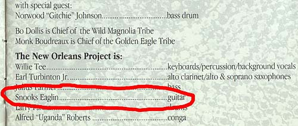
Вторая половина 70-х. Снукс Иглин продолжает играть на ежегодном Новоарлеанском "Jazz Fest" и в городских клубах. Но...не записывает новых пластинок. Долгожданный альбом "Down Younder" выходит только в 1978 году на фирме "Sonet" (оригинальная запись 1977 года).
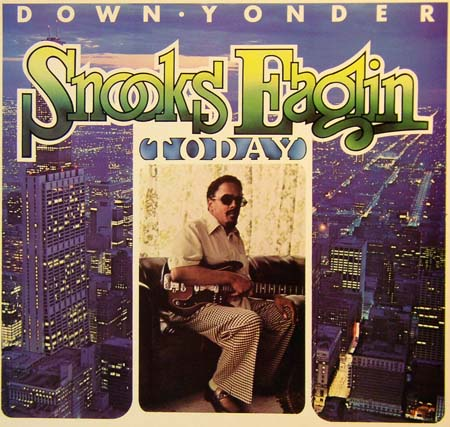
Пластинку хвалят, но удачной её назвать сложно. Снукс играет много известных музыкальных "боевиков", причем, следуя фанковой линии альбома, превращает в фанк даже блюзовую классику Роско Гордона (Roscoe Gordon) "No More Doggin'". Однако у записи - серьезный недостаток: гитара Иглина отвратительно (по-другому и не скажешь) записана. Иногда просто нельзя разобрать, что он играет, особенно в нижнем регистре - это при том, что со звукоизвлечением у слепого Снукса всегда был порядок. Дело в качестве звука и гитарных эффектов - они ниже всякой критики. Такое ощущение, что гитара музыканта записывалась сразу через пульт, без комбиков и микрофонов, отчего получилась сухой и задавленной. Гитарный эффект "overdrive" (для т.н. перегрузки сигнала гитары) раздражающе жужжит, как гигантская оса, а сам звук задыхается без компрессии и сустейна. Чрезвычайно экспрессивному и эмоциональному Снуксу Иглину не хватило здесь свободного, яркого звука. И (как это ни грустно) на записи наш герой местами играет мимо нот. Например, в композиции #3 "Talk To Your Daughter" во время соло.
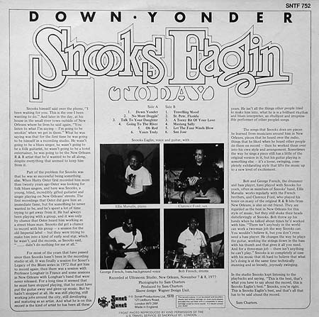
Читая аннотацию на пластинке, понимаешь, как болезненно воспринимаются творческие перерывы: автор рецензии Сэм Чартерс (Sam Charters) убеждает слушателя: "Нет, он не перестал играть, не зачехлил свою гитару! Он продолжает работать в своем городе, развивается и взрослеет как артист..."
Альбом "Down Yonder" был переиздан фирмой UNIVERSAL в 1989 и 2005 годах вот в таком странном виде:
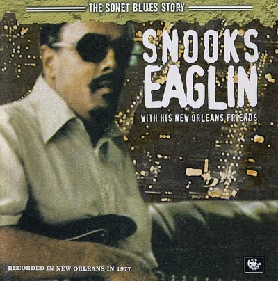
80-е годы - время сотрудничества Иглина с лэйблом "Black Top". Записи этих лет - одни из самых последовательных и ровных в его музыкальной карьере. С 1987 по 1999-й он записал четыре студийных пластинки и концертный альбом.
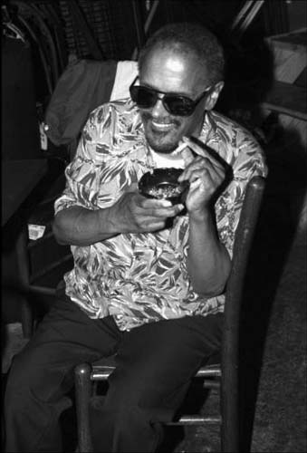
В мир звукозаписи Иглин возвращается с релизом "Baby, You Can Get Your Gun!"
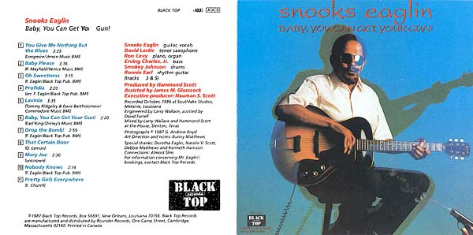
Альбом записан в 1986-м, выпущен в 1987-м. То есть, с момента предыдущего релиза Снукса Иглина проходит уже 9 лет! Хронометраж записи - всего полчаса, но зато каких! Постаревший музыкант (ему 51) ничуть не сдал, а напротив - стал еще более заводным, фанковым и записал мощный и разноплановый материал.
Аккомпанируют Иглину такие музыканты: ветераны новоарлеанской музыки - Джо "Smokey” Джонсон (Joe "Smokey” Johnson) - барабаны; Эрвинг Чарльз (Erving Charles, Jr.) - бас. Это ритм-секция Фэтса Домино (Fats Domino’s orchestra). Кроме того: Дэвид Лэсти (David Lastie) - саксофон, Рон Леви (Ron Levy) - тот самый, что провел семь лет за фортепьяно и Хаммондом B-3 в концертной группе Би Би Кинга. На ритм-гитаре играет Ронни Ерл (Ronnie Earl).
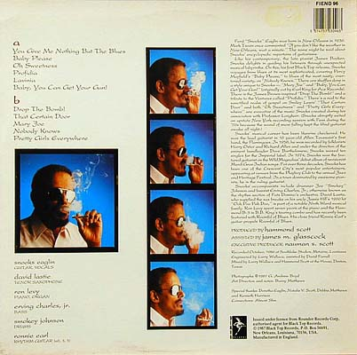
Рука Снукса отполировала целую серию драгоценных камней. Это "Lavinia" (Dave Bartholomew, Tommy Ridgley), "Profidia" - инструментал, посвященный Ventures, "Baby, You Can Get Your Gun!" Ерла Кинга (Earl King), инспирированный Джеймсом Брауном взрывной фанковый боевик "Drop the Bomb". Иглин даже перерабатывает один из своих синглов, записанных когда-то на "Империал" - "That Certain Door”. А также вспоминает вещи эпохи работы с Профессором Лонгхэйром - "Pretty Girls Everywhere". Романтичный эстрадный певец, блюзовый шаутер, тонкий инструменталист, фанкер - все это Снукс Иглин. После выхода пластинки становится очевидно, что все эти годы он не сидел без дела. Теперь артиста услышало (и увидело на концертах) еще и новое, молодое поколение, которое не застало его ранних выступлений.
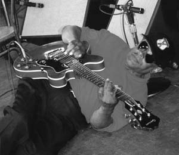
"Он один из самых талантливых людей, которых я когда-либо встречал на свете, - рассказывает в одном из интервью клавишник Рон Леви (Ron Levy). - Он может сыграть абсолютно любую песню, просто взяв ее из головы! Например, взять и вдруг начать исполнять вещи Хендрикса, ноту в ноту, как в оригинале... Обычно большинство музыкантов сообщает вам название песни, размер, ключ и знаки, а Снукс просто говорил: "Готовы? Поехали!" Мы тогда часто болтались все вместе по Новому Орлеану - Снукс мог в любой момент сыграть что угодно, будь то аккорды, бас или мелодия. Один раз мы были на какой-то вечеринке. А Снукс сидел в углу и играл, великолепно играл. Через какое-то время у него порвались несколько струн, но это абсолютно ничего не изменило - он продолжал играть, как ни в чем ни бывало".
Кейбордист Джон Клири (Jon Cleary), отработавший с Иглином около 10 лет, говорит: "Было трудно сказать, что за аккорды он играет - всё закрывали его пальцы. Они были похожи на когти - такие, знаете, длинные-длинные. И он никогда не использовал медиатор".
Постоянный партнер Иглина в студии и на сцене - нью-орлеанский басист Джордж Портер мл. (George Porter Jr.) вспоминает: "Игра с Иглином - это игра по слуху. Он часто говорил нам: "Если вы будете следовать за мной, то никогда не запутаетесь!" Музицировать с ним было одно удовольствие, потому что все, что он исполнял, я слышал в детстве, я вырос на этой музыке! Но, конечно, всегда были пара-тройка неизвестных песен, которые подкидывал Снукс, и это заставляло тебя лезть в петлю! Сначала я старался садиться перед ним и смотреть на его руки. Но потом я заметил, что иногда его гитара была настроена неправильно, а его пальцы все равно оказывались на нужных ладах. Тогда я решил перестать наблюдать за его руками, потому что понял - у Снукса есть секретная формула, которая работает только у него одного. Многие гитаристы пытались понять, как он это делает, но чаще всего качали головами и уходили. На генеалогическом древе гитарных стилей, ветка Снукса Иглина растет совершенно отдельно от всех".
Еще один альбом на "Black Top" - пластинка "Out Of Nowhere" (1989) - одна из лучших работ в дискографии Снукса Иглина.
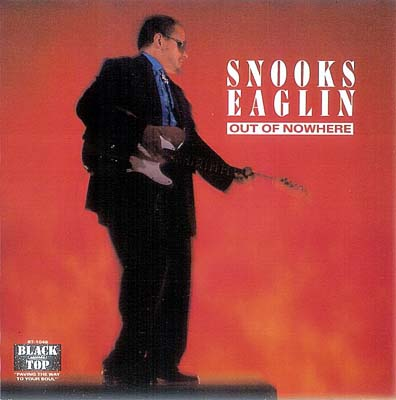
Искрометный, заводной, хитовый, драйвовый - все это о релизе 1989 года. Отменный репертуар и мастерское владение инструментом приближают пластинку фирмы "BlackТор" к идеалу блюзового альбома.
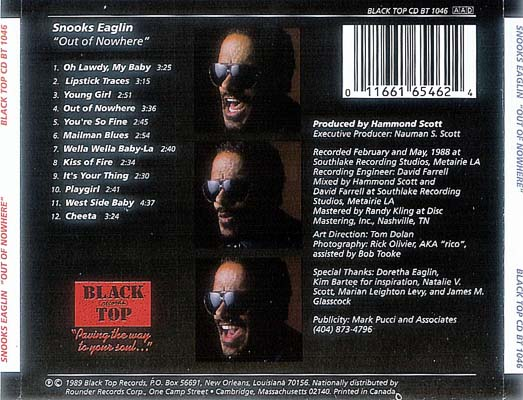
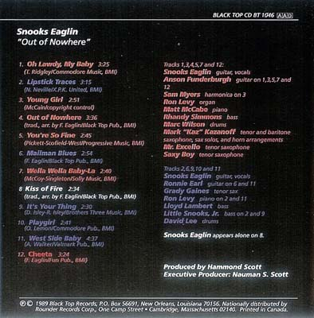
"Teasin' You" (1992) - еще один крепкий альбом, выпущенный Снуксом Иглином на лэйбле "BlackTop".
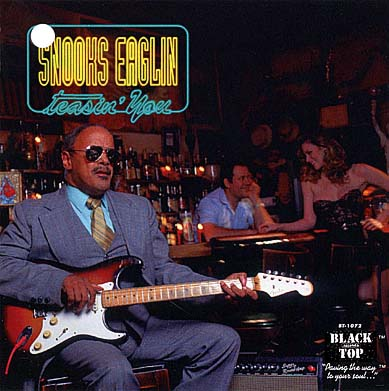
На бас-гитаре играет участник знаменитой фанковой группы "The Meters" - Джордж Портер мл. (John Porter Jr.), а Иглин на этот раз исполняет чужие композиции. Игру Снукса на этой пластинке многие критики называют "ошеломляющей", но выделить что-то из ряда вон выходящее сложно, ведь на записях прежних лет артист всегда показывал неизменно высокий класс.
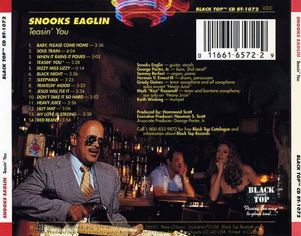
Как и в ранних работах, материал получился эклектичным. Здесь есть все: от фанка и ритм-н-блюза - до свинга (в #11 "Heavy Juice" и #12 "Lilly May" Снукс действительно играет бесподобные соло). В целом, саунд альбома вышел чересчур "комфортным". По сравнению с предыдущей пластинкой "Out Of Nowhere" градус драйва здесь чуть ниже.
Еще один яркий альбом тех лет - "Soul's Edge" (1995).Записан в 1994, выпущен в 1995 г.
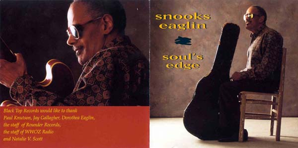
На этом альбоме Иглин, как обычно, вновь предлагает слушателю музыкальную солянку: ретроспективу послевоенного ритм-н-блюза Америки. Здесь и соул-баллада Джо Саймона (Joe Simon) - "Nine Pound Steel". И "Skinny Minnie" - Билла Хэйли (Bill Haley & the Comets). И "Ling Ting Tong" - Five Keys. Все они так сыграны Снуксом, что альбом слушается как одно целое.
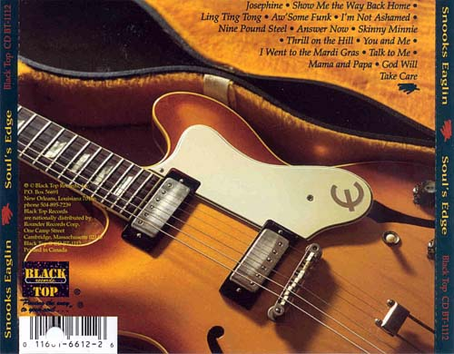
На пластинке - приятный упругий саунд, все инструменты прописаны очень душевно, особенно орган и ударные. Саунд-продюсеру - твердая "пятерка". Кроме того, есть еще отточенная игра музыкантов и сочные подпевки - в общем, приятная во всех отношениях пластинка, претендент на лучший альбом в дискографии артиста. Вроде бы уже показавший все, на что способен, Иглин на новой пластинке умудряется продемонстрировать новые трюки.
Середина 90-х. Снукс Иглин едет с концертами в Японию. Концертник из страны восходящего солнца - пожалуй, лучшая пластинка в дискографии Снукса Иглина. Материал отобран с двух концертных дней, а вернее - ночей 9 и 10 декабря 1995 года в Токийском Park Tower Hall. В 1996-м записи были изданы японским лэйблом "P-Vine Records" под названием "Soul Train from 'Nawlins: Live at Park Tower Blues Festival '95". А в 1997 году пластинку выпустили в США - на этот раз как "Live in Japan".
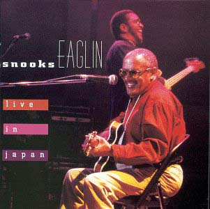
Материал концерта знаком слушателю по альбомам Снукса Иглина на "Black Top" - в частности, "Teasin' You" (1992) и "Soul's Edge" (1995). Но Снукс играет много других вещей. Например, композиции из репертуара "Айзли Бразерс" (Isley Brothers - "It's Your Thing") и Стиви Уандера (Stevie Wonder - "Boogie On, Reggae Woman"). Как всегда, Иглин предельно эмоционален в R&B-боевиках и лиричен в балладах. Он беспрестанно шутит, разговаривает с гитарой, заводит зал, и у концерта с первых минут появляется невероятный драйв... а человеку, между тем, 59 лет!
После окончания сотрудничества с лэйблом "Black Top" Иглин в 2002 году записывает пластинку "The Way It Is" на лэйбле "Money Pit Records". В последние годы живет в городе Сент-Роуз, в пригороде Нового Орлеана с женой Дороти. Дает нечастые концерты, участвует в новоорлеанских фестивалях.
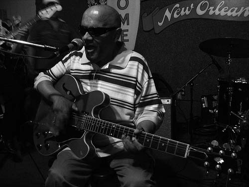
Говорили, что Иглин на сцене и Иглин в жизни - два разных человека. За пределами ночных клубов патриарх новоарлеанского блюза становился не очень контактен, часто отказывался от интервью и был очень набожным. По вероисповеданию причислял себя к адвентистам седьмого дня, верил в соблюдение всех Десяти заповедей, в том числе буквального соблюдения заповеди о субботе как дня сотворения мира. Потому и не играл в этот день недели в клубах - если концерт выпадал на ночь пятницы, это означало, что с группой должен играть кто-то другой, а Снукс и его жена Ди будут соблюдать обряд.
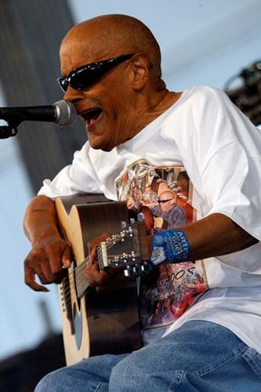
Иглин заболел осенью 1993-го. Вздох облегчения со стороны поклонников его творчества вырвался только через год, когда гитарист заявил о своем участии на фестивале Jazz & Heritage Fest. Но в 2008 году Иглину был поставлен диагноз "рак простаты", музыканта госпитализировали. Он еще планировал сыграть на джазовом фестивале в родном Нью-Орлеане весной 2009-го, но 18 февраля в больнице Ochsner Medical Center его настиг сердечный приступ. Иглин часто повторял, что пока не появилась жена Ди, о нем заботилась его мать. По неведомому стечению обстоятельств умер Снукс ... в день рождения матери.
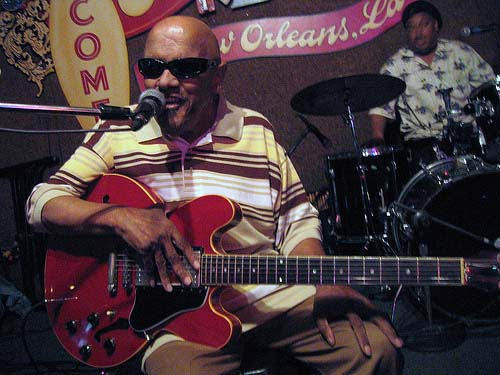
Слепой Иглин, "живой музыкальный автомат", так и не стал национальной американской звездой. Но его голос и уникальная манера игры оживают, стоит только включить какой-нибудь из "джукбоксов" 21 века: компьютер, CD-плеер или флэшку. Так и кажется, что Снукс сейчас крикнет по привычке в зал: "Ну, что еще хотите услышать? Поехали!"
Обобщил биографический материал Алексей Щёголев.